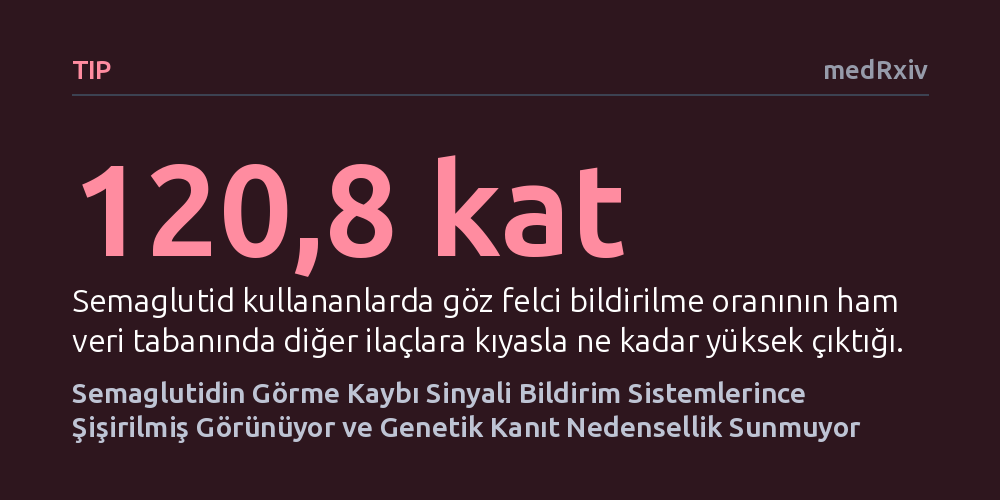

TIP · medRxiv · 2026-10-26
Araştırmacılar, zayıflama ilacı semaglutidin ani görme kaybına yol açtığı iddiasının gerçek bir biyolojik risk mi yoksa bildirim yanılsaması mı olduğunu inceledi. Bulgular, vaka bildirimlerindeki 121 katlık artışın sistemik yankıdan kaynaklandığını ve genetik analizlerin doğrudan nedensel bir bağ göstermediğini ortaya koydu.
Popüler zayıflama ilaçlarıyla ilgili korkutucu yan etki istatistiklerinin her zaman biyolojik bir gerçeği yansıtmadığını, veri tabanlarının kendi kendini besleyen bir panik dalgası yaratabileceğini gösteriyor.

Semaglutid etken maddesini içeren diyabet ve kilo kontrolü ilaçları, son yıllarda dünya genelinde benzeri görülmemiş bir kullanıcı kitlesine ulaştı. Ancak Temmuz 2024'te yayımlanan bir kohort çalışması, ilacın 'arteritik olmayan anterior iskemik optik nöropati' (NAION) adı verilen ve halk arasında göz felci olarak bilinen ani görme kaybı tablosuyla bağlantılı olabileceğini öne sürdü. Bu uyarının ardından Avrupa İlaç Ajansı (EMA), Haziran 2025'te söz konusu durumu yılda 10.000 hastada yaklaşık bir ek vaka sıklığıyla 'çok nadir bir yan etki' olarak kabul etti.
Fakat bu resmî kabule rağmen araştırmacıların kafasını kurcalayan büyük bir soru vardı: İlaç güvenliği veri tabanlarında semaglutid ile görme kaybı arasında görülen yüz katı aşkın vaka artışı, gerçekten biyolojik bir zehirlenmenin sonucu muydu? Yoksa kamuoyundaki yoğun ilgi ve hekimlerin duyduğu endişe, bildirim sisteminde kendi kendini büyüten yapay bir yankı odası mı yaratmıştı? İşte bu çalışma, tam olarak bu karmaşık soruyu aydınlatmak için yola çıktı.
Araştırma ekibi ilk olarak küresel ilaç güvenliği sistemlerinin devasa arşivlerine indi. ABD Gıda ve İlaç Dairesi'nin (FAERS) 2018 ile 2026 yılları arasını kapsayan 12,3 milyondan fazla bildirim kaydı, Japonya'nın 1 milyonu aşkın JADER sistemi ve Dünya Sağlık Örgütü'nün VigiAccess verileri masaya yatırıldı. Bilim insanları, semaglutid için yapılan görme kaybı bildirimlerinin sıklığını diğer ilaçlarla kıyaslamak amacıyla düzeltilmiş regresyon modelleri ve bildirim oranları analizleri uyguladı.
Yalnızca insanların yaptığı öznel bildirimlere güvenmek bilimsel olarak yeterli olamazdı. Bu nedenle araştırmacılar, biyolojik nedenselliği doğrudan test etmek amacıyla 'Mendel rastgelemesi' adı verilen genetik bir yaklaşımı devreye soktu. İlacın hedef aldığı GLP-1 reseptörünün dokulardaki üretim seviyesini belirleyen altı farklı genetik varyant incelendi ve bu varyantların 244 optik nöropati vakasıyla ilişkisi bağımsız olarak araştırıldı.
Elde edilen sonuçlar son derece çarpıcı bir tablo ortaya koydu. Semaglutid için sistemlerde 879 görme kaybı bildirimi bulunuyordu ve ham bildirim oranı diğer ilaçlara kıyasla tam 120,8 kat daha fazlaydı. Bu oran, Avrupa İlaç Ajansı'nın kabul ettiği göreli riskin yaklaşık altmış katı büyüklüğündeydi. Ancak zaman çizelgesi incelendiğinde bu aşırı sinyalin sırrı çözüldü: Temmuz 2024'teki ilk çalışmanın duyulmasının hemen ardından, sisteme düşen bir raporda görme kaybından bahsedilme olasılığı tam 48,6 kat fırlamıştı. İlaç aniden dikkat çektiği için herkes bu yan etkiyi bildirmeye başlamıştı.
Dahası, birbirini doğruladığı düşünülen bağımsız uluslararası veri tabanlarının aslında aynı vakaları tekrar tekrar kaydettiği anlaşıldı; FAERS'teki 879 vakaya karşılık VigiBase veri tabanında 871 vaka yer alıyordu. Biyolojik tarafta ise GLP-1 reseptör seviyelerini belirleyen genetik varyantlar ile göz felci arasında hiçbir anlamlı ilişki bulunamadı. Yani genetik olarak reseptörü daha yoğun veya zayıf çalışan bireylerde bu görme kaybı riskinin arttığına dair hiçbir iz yoktu.
Eldeki bulgular, semaglutid etrafındaki görme kaybı alarmının çok önemli bir kısmının bildirim sistemlerinin kendi dinamiklerinden kaynaklandığını gösteriyor. Bir ilaca yönelik medya ilgisi ve hekim dikkati arttığında, pasif yan etki sistemleri 'bildirim salgını' üretebiliyor ve sistemler birbirinin verisini kopyaladığı için ortaya devasa bir sahte kanıt dağı çıkabiliyor.
Yine de bu durum ilacın kesinlikle masum olduğu anlamına gelmiyor; araştırmacıların vurguladığı gibi nedensellik sorusu 'her iki yönde de açık' kalmaya devam ediyor. Çünkü kullanılan genetik analiz yalnızca riski dört kattan fazla artıran çok büyük etkileri tespit edebilecek güçteydi ve daha küçük bir artış gözden kaçmış olabilir. Şimdilik söylenebilecek en dürüst bilimsel çıkarım, ilacın göz sağlığına zarar verdiğine dair şüphelerin abartılı bir bildirim dalgasından beslendiği ve kesin hüküm vermek için daha güçlü klinik çalışmalara ihtiyaç duyulduğudur.